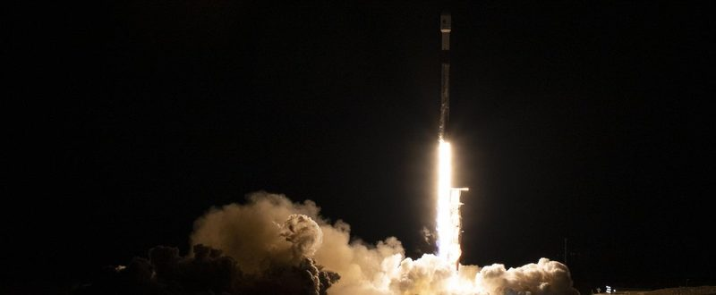

Two launches, two successes
Falcon 9 cleared a week of delays for the SDA; China's Long March 12 flew its fifth mission of the year.

Falcon 9: SDA Tranche 1 Transport Layer A
Falcon 9 lifted off from Space Launch Complex 4E at Vandenberg Space Force Base, California, at 3:39 a.m. EDT on Saturday, October 10 (07:39 UTC), with 21 Northrop Grumman-built satellites for the SDA's Tranche 1 Transport Layer, Spaceflight Now reported. Booster B1103, on its sixth flight, landed at Landing Zone 4 about 7.5 minutes after liftoff.
The first attempt, on October 5, stopped 58 seconds before liftoff after onboard computers flagged "some off-nominal data on Stage Two." SpaceX then moved the date a day at a time. "Additional time throughout the week allowed for double checks on vehicle systems and range deconfliction," SpaceX launch commentator Atticus Vadera said. Spaceflight Now said the range conflict is believed to have been a missile test from Vandenberg on Friday; the Federal Aviation Administration's (FAA) advisory had listed a Northrop Grumman MK21-2B launch from the base that morning. It was the fourth of six Tranche 1 Transport Layer launches.
Long March 12: SatNet LEO Group 27
China launched a Long March 12 from the commercial launch site in Hainan at 3:27 a.m. Beijing time on Saturday, 3:27 p.m. EDT Friday, and placed the 27th group of low-orbit internet satellites into the preset orbit, Xinhua reported. The flight from Commercial Launch Complex 2 at Wenchang was within the 3:20–3:49 p.m. EDT window that airspace notices had shown, and China Aerospace Science and Technology Corp. (CASC) did not release the number of satellites. Launch Library 2 records it as a success. SatNet, also known as Guowang, is China's state-run broadband megaconstellation.